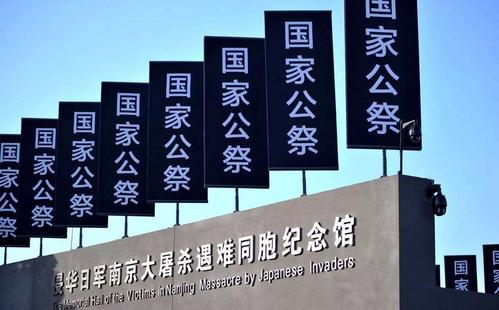

22日，侵华日军南京大屠杀遇难同胞纪念馆获捐一批南京大屠杀幸存者夏淑琴老人诉讼日本右翼分子名誉侵权案代理律师谈臻的资料及物品，包括“夏淑琴日本诉讼案”留影等。
“最珍贵的是当年陪同夏淑琴到日本应诉的相关律师、纪念馆员工等的合影。照片中还夹有当年日本友好人士的名片。这些可弥补对这段历史案件的细节描述。”纪念馆馆长张建军说。
1998年，日本亚细亚大学教授东中野修道和日本自由史观会成员松村俊夫在出版的两本书中，夏淑琴等人被描述成“假证人”。2000年，夏淑琴在南京以侵害名誉权为由，起诉松村俊夫和东中野修道。针对夏淑琴在中国国内的诉讼，日本被告东中野修道在东京法院提出了反诉讼。
谈臻等人与南京律师援助团陪同夏淑琴赴日出庭应诉。当夏淑琴站到日本法庭上，对方突然撤诉，夏淑琴随后提出反诉。2009年，日本最高法院就夏淑琴状告《南京大屠杀的彻底检证》一书作者和出版社侵害名誉一案作出终审判决，判定夏淑琴胜诉。期间，谈臻等与日本友好人士及律师团一起，对日本右翼分子展开法庭上的斗争。
在谈臻推动下，南京市律师协会和南京市法律援助基金会于2017年共同发起成立“维护南京大屠杀历史真相律师大联盟”，致力于南京大屠杀幸存者权益保护、南京大屠杀法律问题研究及推动民间诉讼等。
2020年6月12日，谈臻因病离世。8月22日，谈臻的家人将谈臻生前与“夏淑琴名誉案”相关物品、与纪念馆相关资料及其个人相关物品等无偿捐赠给纪念馆。
“对纪念馆来说，谈臻律师是一个有历史担当的人。”张建军表示，几天前，又一位南京大屠杀幸存者去世，登记在册的幸存者仅剩73位。历史的见证人在减少，纪念馆将在接受相关资料、物品后成立专档，铭记谈臻的重要贡献。同时希望更多的人能成为传承历史记忆、践行和平行动的使者。
 关注湖南文化产业网微信公众号
关注湖南文化产业网微信公众号湖南文化产业网(www.hnci.net.cn)版权所有 (c) All Rights Reserved.
未经湖南文化产业网书面特别授权，请勿转载或建立镜像